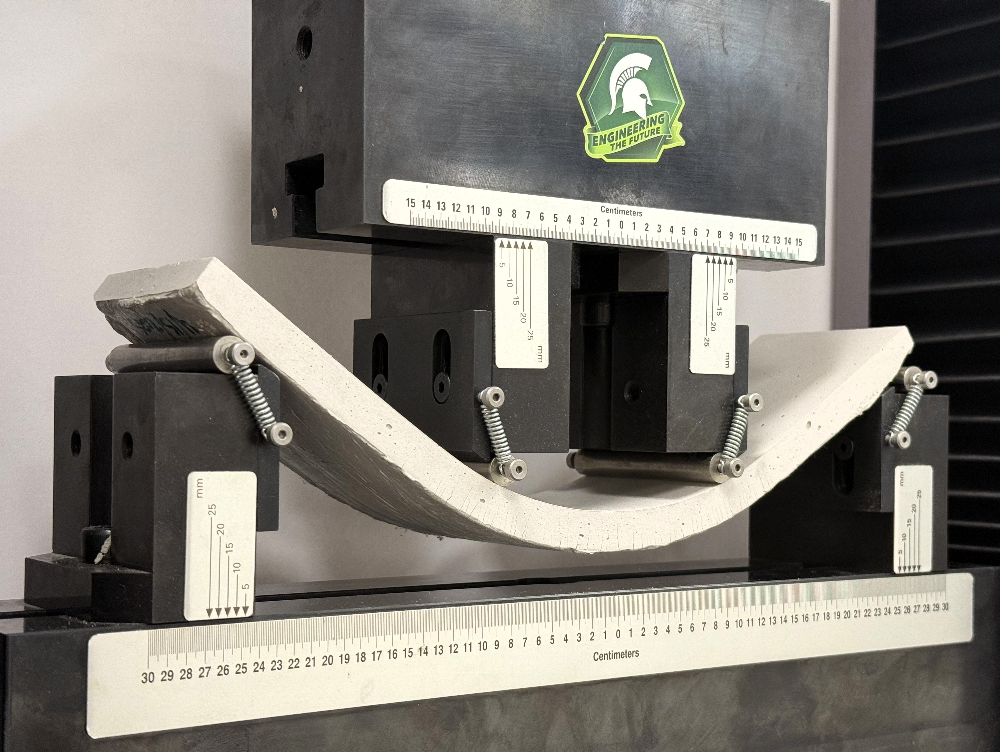
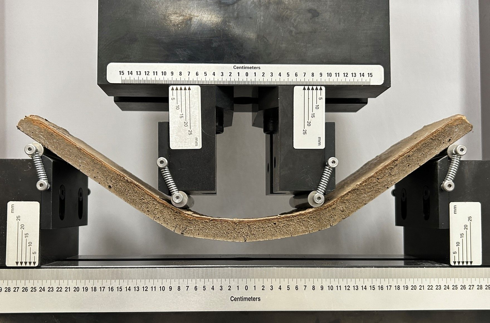
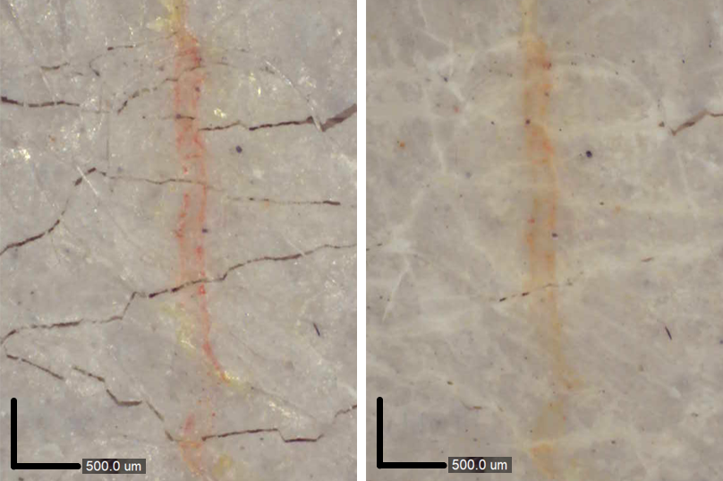

RESEARCH AREAS
Materials for a resilient future
We connect materials science, mechanics and structural engineering to advance sustainable and durable infrastructure.
MATERIALS & INFRASTRUCTURE
Research areas
Explore our work on materials design, structural performance and infrastructure preservation.
RESEARCH AREA
COMPOSITES & MECHANICS
Developing fiber-reinforced and strain-hardening composites and studying how they deform, crack and carry loads.
- Material development and characterization of ductile lunar and Martian regolith-based cementitious composite ↗Online 2026 · Journal of Aerospace Engineering 40(1), 04026078 (January 2027 issue)
- AI-aided design of carbonated ductile well cement for enhanced recovery ↗2026 · ACS Omega 11(27), 40092–40109
- An adaptive deep neural network-based assessment framework for environmental-cost-mechanical performance of engineered cementitious composites ↗2026 · Computer-Aided Civil and Infrastructure Engineering
- Seismic and wind resistance of natural pozzolan-based engineered cementitious composites: Material characterization and numerical analysis ↗2025 · Materials and Structures 58(6), 227
- Novel application of Chilean natural pozzolan for sustainable strain-hardening cementitious composite ↗2023 · Resources, Conservation & Recycling 197, 107098

RESEARCH AREA
DATA-DRIVEN DESIGN & CHARACTERIZATION
Combining experimental characterization, quantitative analysis, modeling and data-driven methods to understand and design materials.
- AI-aided design of carbonated ductile well cement for enhanced recovery ↗ Front Cover Article2026 · ACS Omega 11(27), 40092–40109
- An adaptive deep neural network-based assessment framework for environmental-cost-mechanical performance of engineered cementitious composites ↗2026 · Computer-Aided Civil and Infrastructure Engineering
- In-situ microtomography image segmentation for characterizing strain-hardening cementitious composites under tension using machine learning ↗2023 · Cement and Concrete Research 169, 107164
- How do specific surface area and particle size distribution change when granular media dissolve? ↗Online 2020 · Chemical Engineering Journal 406, 127098 (2021 issue)
- Temperature dependence of gypsum dissolution rates ↗2020 · Cement and Concrete Research 129, 105969
RESEARCH AREA
EXTREME ENVIRONMENTS & SPACE
Studying construction materials in demanding settings, including wellbore systems and lunar and Martian regolith simulants.
- Material development and characterization of ductile lunar and Martian regolith-based cementitious composite ↗Online 2026 · Journal of Aerospace Engineering 40(1), 04026078 (January 2027 issue)
- Effects of desert sands on the fresh and hardened properties of cement-based materials ↗2026 · Journal of Materials in Civil Engineering 38(12), 04026433
- Assessing the cementitious reactivity of lunar and Martian regolith simulants for extraterrestrial construction ↗2026 · npj Space Exploration 2, 29
- AI-aided design of carbonated ductile well cement for enhanced recovery ↗2026 · ACS Omega 11(27), 40092–40109

RESEARCH AREA
DECARBONIZATION & CIRCULARITY
Designing cementitious systems with alternative and supplementary binders, regenerative biosilica, natural pozzolans and recycled resources. Characterization connects mixture design, microstructure and durability, alongside broader circular resource recovery.
- Resource accessibility of rare earths across secondary feedstocks ↗2026 · Chem Circularity 1(3), 100068
- Reactivity, hydration kinetics, and microstructure evolution of activated copper mine tailings as supplementary cementitious materials ↗2026 · Construction and Building Materials 545, 148108
- Performance, durability, and alkali–silica reaction of low-carbon concrete incorporating soda-lime glass powder and Class F fly ash ↗2026 · Journal of Building Engineering 130, 117085
- Circular economy for post-hazard infrastructure restoration: Strategies for resilience and resource efficiency ↗2025 · Journal of Sustainability 1(1)
- Assessment of particle packing approach for design of low-clinker, LC3 binders at low water-to-solids ratio ↗2025 · Cement and Concrete Composites 161, 106104
RESEARCH AREA
ENVIRONMENTAL & FUNCTIONAL MATERIALS
Investigating pollutant uptake and functional properties in cementitious materials.
- Phase change materials in concrete: A review of incorporation methods, effect on mechanical and thermal properties, and long-term performance ↗Online 2026 · Journal of Materials in Civil Engineering 39(1), 03126010 (2027 issue)
- NOx uptake capacities and sequestration pathways by hydrated cementitious phases ↗2022 · Cement and Concrete Research 159, 106882
- Mineralogy optimization for immobilization of potentially toxic elements and halides in co-disposed flue gas desulfurization brines and bituminous coal fly ash ↗2022 · Journal of Hazardous Materials Advances 8, 100154
- NOx sequestration by calcium aluminate cementitious materials ↗2021 · Cement and Concrete Research 142, 106381
- Quantification of NOx uptake in plain and TiO2-doped cementitious materials ↗2019 · Cement and Concrete Research 122, 251–256

RESEARCH AREA
DURABILITY & INFRASTRUCTURE PRESERVATION
Studying deterioration, corrosion and preservation strategies to extend infrastructure service life.
- Phase change materials in concrete: A review of incorporation methods, effect on mechanical and thermal properties, and long-term performance ↗Online 2026 · Journal of Materials in Civil Engineering 39(1), 03126010 (2027 issue)
- Effects of desert sands on the fresh and hardened properties of cement-based materials ↗2026 · Journal of Materials in Civil Engineering 38(12), 04026433
- Performance, durability, and alkali–silica reaction of low-carbon concrete incorporating soda-lime glass powder and Class F fly ash ↗2026 · Journal of Building Engineering 130, 117085
- Circular economy for post-hazard infrastructure restoration: Strategies for resilience and resource efficiency ↗2025 · Journal of Sustainability 1(1)
- Crack sealers for the preservation of concrete bridge decks: A synthesis of a national survey and literature review ↗2023 · Journal of Infrastructure Preservation and Resilience 4, 23
